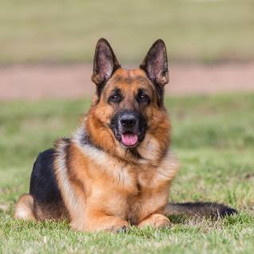

About Us
Welcome to Local Pet Adoption! We are dedicated to finding loving homes for pets in need. We also provide information about local pet adoption services in Jacksonville, Florida.
How to Adopt a Pet
If you want to adopt from other agencies, you can visit one of the following adoption agencies: